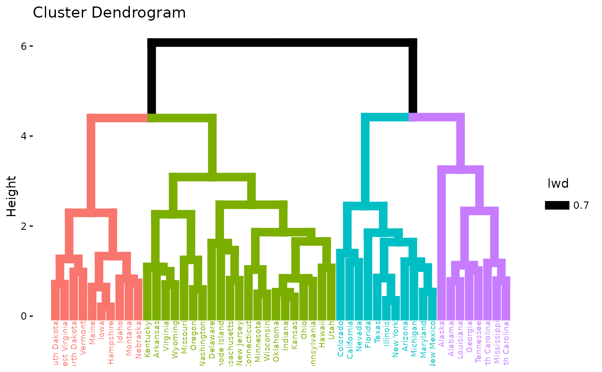
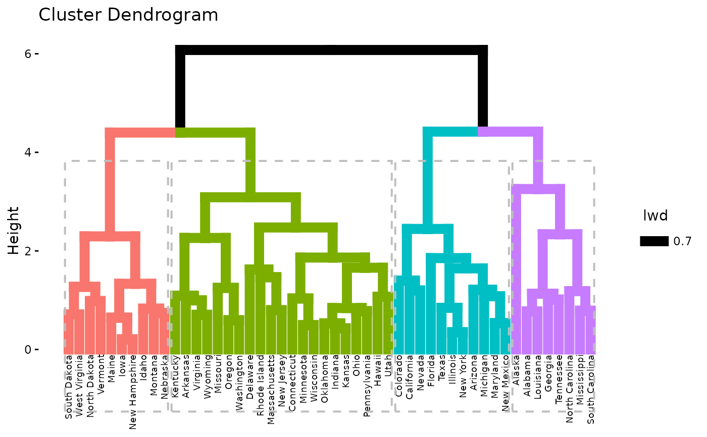
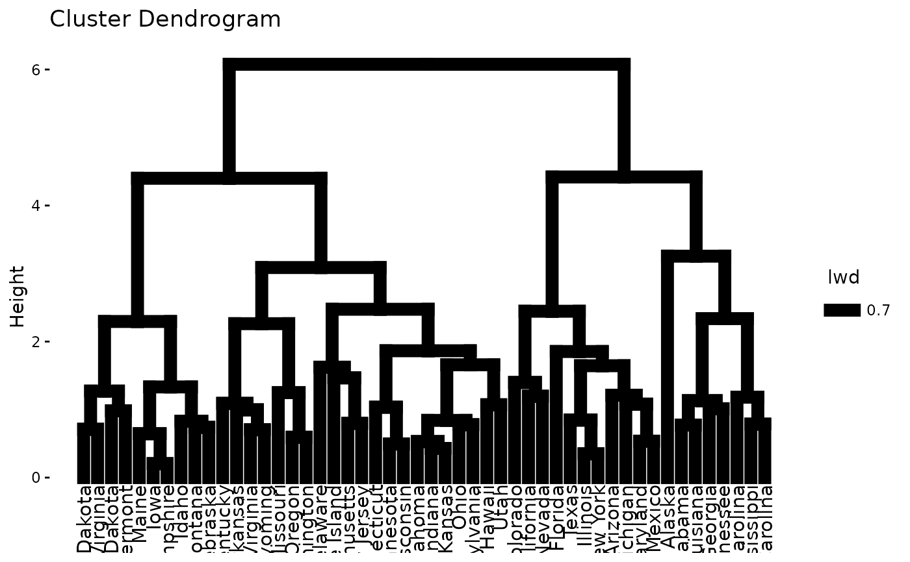
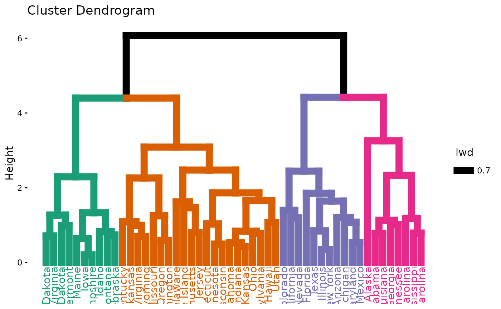
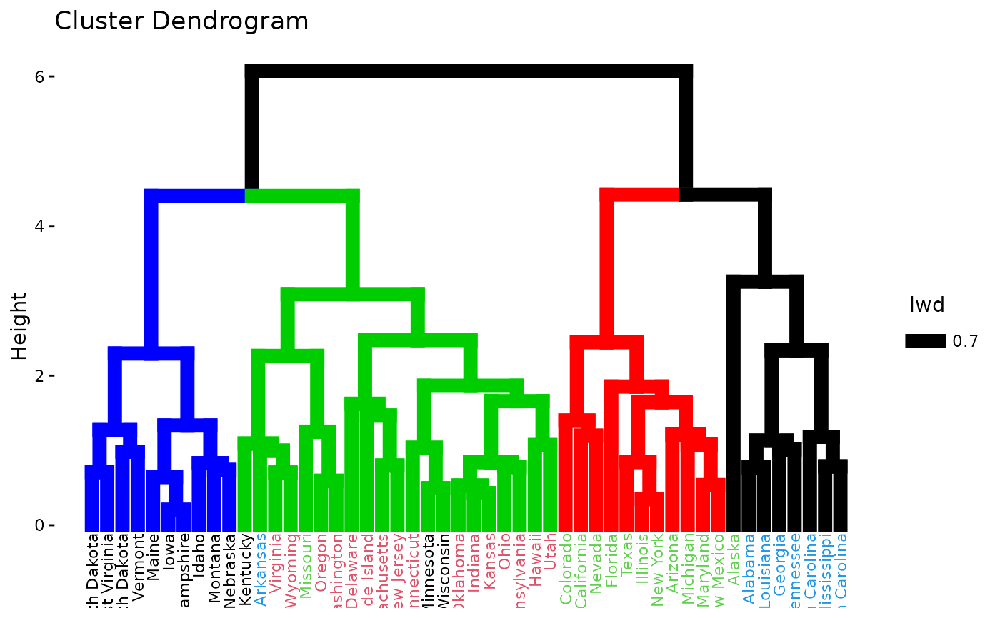
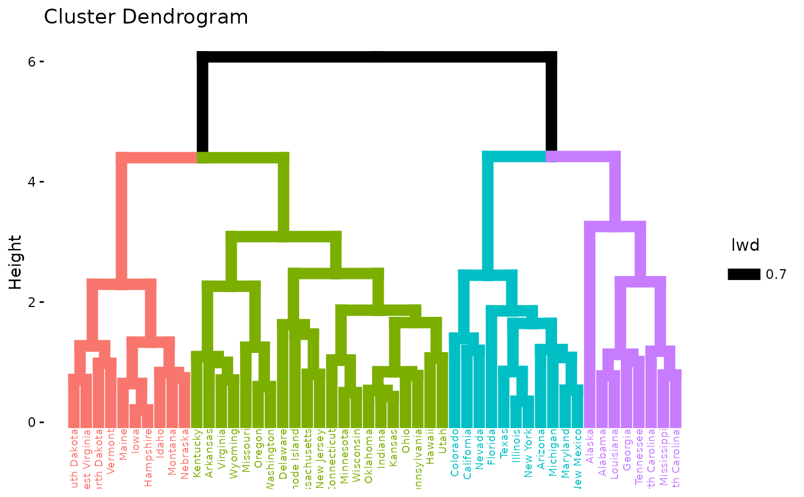
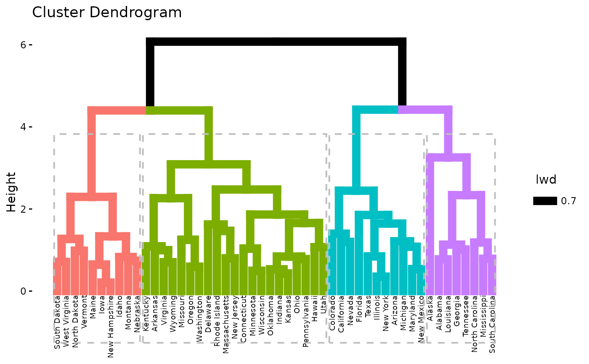
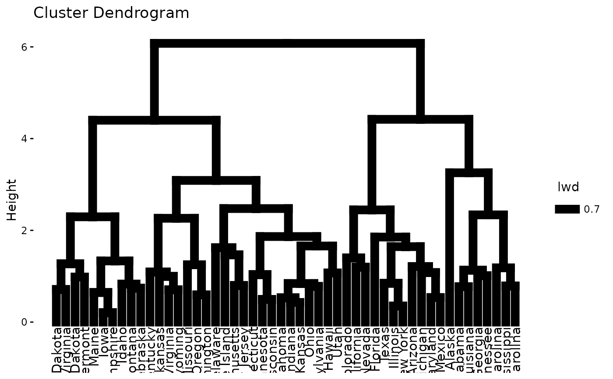
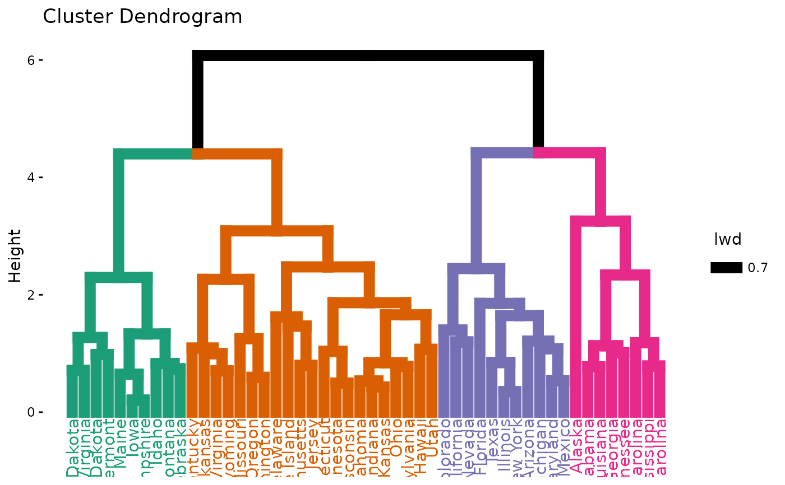
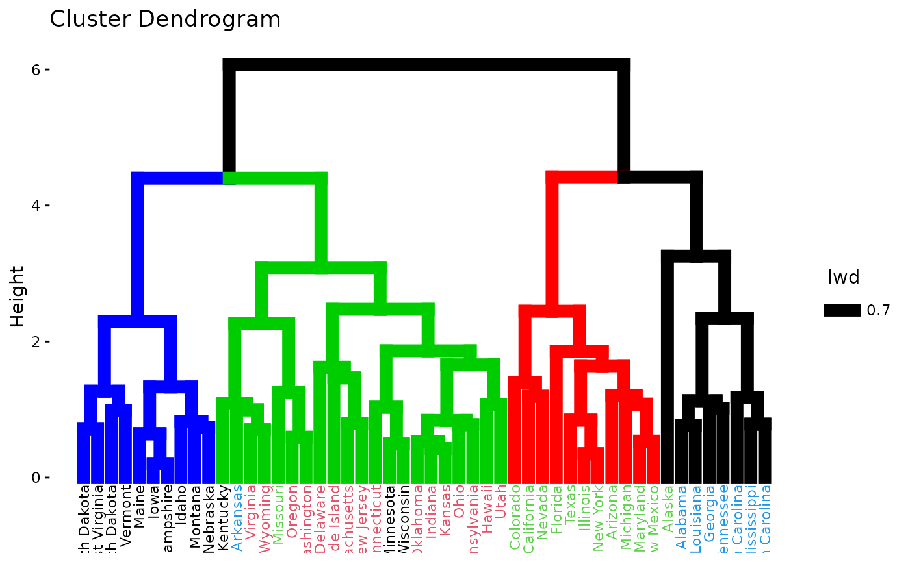

Draws easily beautiful dendrograms using either R base plot or ggplot2. Provides also an option for drawing a circular dendrogram and phylogenic trees.
Usage
fviz_dend(
x,
k = NULL,
h = NULL,
k_colors = NULL,
palette = NULL,
show_labels = TRUE,
color_labels_by_k = TRUE,
label_cols = NULL,
labels_track_height = NULL,
repel = FALSE,
lwd = 0.7,
type = c("rectangle", "circular", "phylogenic"),
phylo_layout = "layout.auto",
rect = FALSE,
rect_border = "gray",
rect_lty = 2,
rect_fill = FALSE,
lower_rect,
horiz = FALSE,
cex = 0.8,
main = "Cluster Dendrogram",
xlab = "",
ylab = "Height",
sub = NULL,
ggtheme = theme_classic(),
...
)Arguments
- x
an object of class dendrogram, hclust, agnes, diana, hcut, hkmeans or HCPC (FactoMineR).
- k
the number of groups for cutting the tree.
- h
a numeric value. Cut the dendrogram by cutting at height h. (k overrides h)
- k_colors, palette
a vector containing colors to be used for the groups. It should contains k number of colors. Allowed values include also "grey" for grey color palettes; brewer palettes e.g. "RdBu", "Blues", ...; and scientific journal palettes from ggsci R package, e.g.: "npg", "aaas", "lancet", "jco", "ucscgb", "uchicago", "simpsons" and "rickandmorty".
- show_labels
a logical value. If TRUE, leaf labels are shown. Default value is TRUE.
- color_labels_by_k
logical value. If TRUE, labels are colored automatically by group when k != NULL.
- label_cols
a vector containing the colors for labels.
- labels_track_height
a positive numeric value for adjusting the room for the labels. Used only when type = "rectangle".
- repel
logical value. Use repel = TRUE to avoid label overplotting when type = "phylogenic".
- lwd
a numeric value specifying branches and rectangle line width.
- type
type of plot. Allowed values are one of "rectangle", "triangle", "circular", "phylogenic".
- phylo_layout
the layout to be used for phylogenic trees. Default value is "layout.auto". Allowed values include:
layout.auto,layout_with_drl,layout_as_tree,layout.gem,layout.mdsandlayout_with_lgl.- rect
logical value specifying whether to add a rectangle around groups. Used only when k != NULL.
- rect_border, rect_lty
border color and line type for rectangles.
- rect_fill
a logical value. If TRUE, fill the rectangle.
- lower_rect
a value of how low should the lower part of the rectangle around clusters. Ignored when rect = FALSE.
- horiz
a logical value. If TRUE, an horizontal dendrogram is drawn.
- cex
size of labels
- main, xlab, ylab
main and axis titles
- sub
Plot subtitle. If NULL, the method used hierarchical clustering is shown. To remove the subtitle use sub = "".
- ggtheme
function, ggplot2 theme name. Default value is theme_classic(). Allowed values include ggplot2 official themes: theme_gray(), theme_bw(), theme_minimal(), theme_classic(), theme_void(), ....
- ...
other arguments to be passed to the function plot.dendrogram()
Value
an object of class fviz_dend which is a ggplot with the attributes "dendrogram" accessible using attr(x, "dendrogram"), where x is the result of fviz_dend().
Examples
# \donttest{
# Load and scale the data
data(USArrests)
df <- scale(USArrests)
# Hierarchical clustering
res.hc <- hclust(dist(df))
# Default plot
fviz_dend(res.hc)
 # Cut the tree
fviz_dend(res.hc, cex = 0.5, k = 4, color_labels_by_k = TRUE)

# Don't color labels, add rectangles
fviz_dend(res.hc, cex = 0.5, k = 4,
color_labels_by_k = FALSE, rect = TRUE)

# Change the color of tree using black color for all groups
# Change rectangle border colors
fviz_dend(res.hc, rect = TRUE, k_colors ="black",
rect_border = 2:5, rect_lty = 1)

# Customized color for groups
fviz_dend(res.hc, k = 4,
k_colors = c("#1B9E77", "#D95F02", "#7570B3", "#E7298A"))

# Color labels using k-means clusters
km.clust <- kmeans(df, 4)$cluster
fviz_dend(res.hc, k = 4,
k_colors = c("blue", "green3", "red", "black"),
label_cols = km.clust[res.hc$order], cex = 0.6)

# }
# Cut the tree
fviz_dend(res.hc, cex = 0.5, k = 4, color_labels_by_k = TRUE)

# Don't color labels, add rectangles
fviz_dend(res.hc, cex = 0.5, k = 4,
color_labels_by_k = FALSE, rect = TRUE)

# Change the color of tree using black color for all groups
# Change rectangle border colors
fviz_dend(res.hc, rect = TRUE, k_colors ="black",
rect_border = 2:5, rect_lty = 1)

# Customized color for groups
fviz_dend(res.hc, k = 4,
k_colors = c("#1B9E77", "#D95F02", "#7570B3", "#E7298A"))

# Color labels using k-means clusters
km.clust <- kmeans(df, 4)$cluster
fviz_dend(res.hc, k = 4,
k_colors = c("blue", "green3", "red", "black"),
label_cols = km.clust[res.hc$order], cex = 0.6)

# }